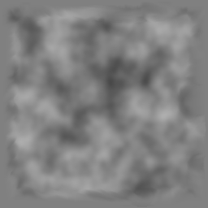
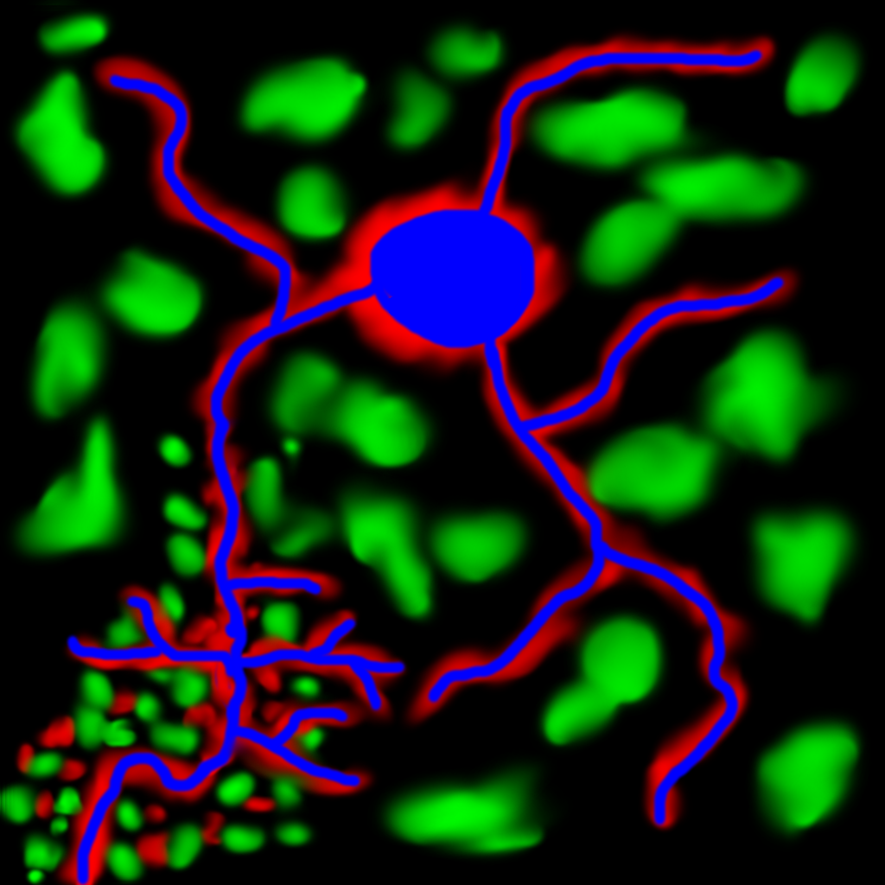
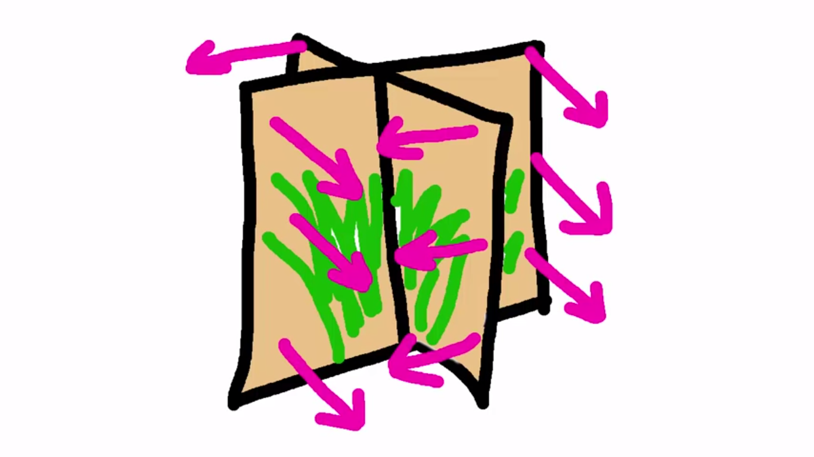
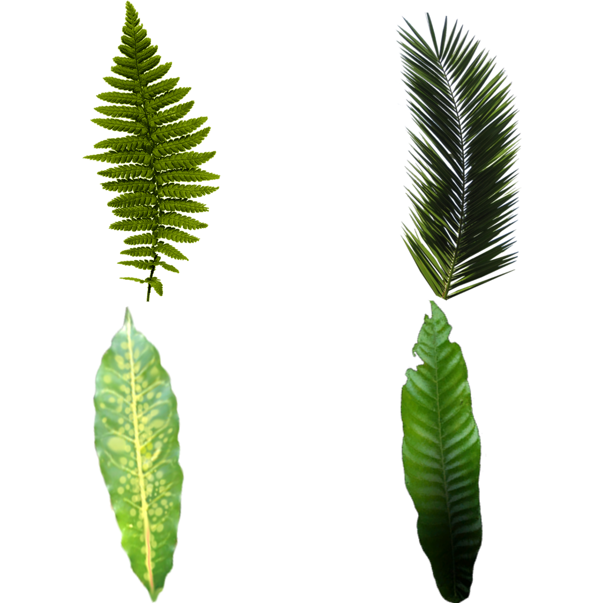
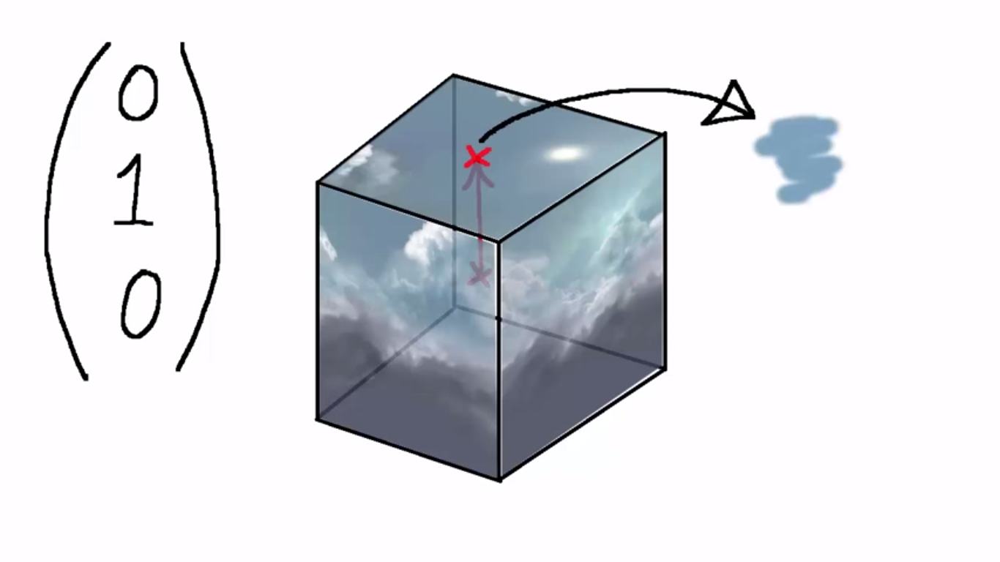

# Indice
- <a href="#introduction">Capitolo 1 : Introduzione</a>
- <a href="#key-concepts">Capitolo 2 : Alcuni concetti chiave utilizzati all'interno di questa relazione</a>
- <a href="#features">Capitolo 3 : Features del Game Engine e dettagli di implementazione</a>
<a id="introduction"></a>
# Capitolo 1 : Introduzione
Il progetto è stato completamente realizzato in C++ utilizzando soltanto le librerie SDL2, GLEW e il linguaggio di shading GLSL per OpenGL versione 3.
Il gioco d'esempio prevede che l'utente guidi una navicella spaziale in un ambientazione un po' fantastica con alberi colorati, piante diverse tra loro e cespugli.
#### Screenshot del gameplay

## Compilazione ed esecuzione
Per la compilazione del gioco è necessario avere installato <a href="https://cmake.org/">Cmake</a> v 3.0.0 o successivo.
Cmake è incaricato di generare il Makefile per il progetto e permette di essere al 100% cross-platform.
Posizionarsi nella directory "project" e dare i seguenti comandi:
```
cd build
cmake ..
make
./gameengine
```
## Comandi di gioco
- Usare le frecce direzionali per muovere la navicella all'interno della scena 3D
- Premere la barra spaziatrice per attivare il "turbo" e far accelerare la navicella
- Digitare "Q" per aprire il menu d'uscita, verrà chiesta conferma: digitare "Y" per confermare oppure "N" per tornare a giocare
<a id="key-concepts"></a>
# Capitolo 2: Alcuni concetti chiave utilizzati all'interno di questa relazione
## VBO e VAO
Un VBO (Vertex Buffer Object) è un buffer allocato nella memoria ad alta velocità della scheda video.
Un VAO (Vertex Array Object) è un oggetto che contiene uno o più VBO (Vertex Buffer Object) ed è pensato per contenere le informazioni relative ad un oggetto 3D.
Tutti i dati contenuti nel VAO verranno passati automaticamente al vertex shader.
Nel progetto il VAO conterrà:
- all'indice 0 il VBO "vertex positions" contenente le coordinate dei vertici di un oggetto
- all'indice 1 il VBO "texture coords" contenente le coordinate texture di ogni vertice
- all'indice 2 il VBO "normals" contenente i vettori normali di ogni vertice
## VBO contenente gli indici
Una volta elencati tutti i singoli vertici di una mesh 3D nel VAO dobbiamo comunicare ad OpenGl in che modo vogliamo che connetta questi vertici tra loro per formare le facce triangolari del nostro oggetto 3D.
Si crea allora un'ulteriore VBO (che non verrà inserito nel VAO) contenente una lista di valori interi che rappresentano l'indice dei vertici da collegare tra loro.
Ad esempio se nel VBO troviamo ...7,3,2...vuol dire che ci sarà una faccia triangolare formata collegando insieme il vertice alla posizione 7, il vertice alla posizione 3 e il vertice alla posizione 2 del VBO "vertex positions".
Si noti come utilizzando questa tecnica si possono inserire le informazioni sui vertici una volta sola nel VAO ma riutilizzarli N volte in N facce diverse semplicemente ripetendo più volte il loro indice.
## Vertex Shader
Il Vertex Shader è un programma che esegue sulla GPU una volta per ogni vertice e riceve in ingresso i dati presenti nel VAO (nel nostro caso coordinate vertice, coordinate texture, normale vertice):
- Calcola la posizione del vertice 3D sullo schermo 2D e la comunica ad OpenGl settando la variabile "gl_Position"
- Può calcolare e produrre un numero arbitrario di valori per vertice che verranno passati (interpolati) in ingresso al fragment shader.
## Fragment Shader
Il Fragment Shader è un programma che esegue sulla GPU una volta per ogni pixel dell'oggetto ricevendo in ingresso un'interpolazione lineare dei valori ricevuti dal vertex shader, l'interpolazione viene effettuata in base alla distanza dai vertici.
- Calcola il colore RGB del pixel e lo comunica ad OpenGl utilizzando la variabile "out_Color"
## Variabili uniform
Le variabili uniform sono variabili degli shader che possiamo modificare dal nostro programma C++.
Per esempio, quando vogliamo fare il rendering di N oggetti tutti con lo stesso modello 3D ma con posizione, scala e rotazione diversa, carichiamo nel VAO i dati della mesh una volta sola ma ogni volta che facciamo il rendering di un oggetto diverso modificheremo la variabile uniform "transformationMatrix" presente negli shader.
Per poter modificare le variabili uniform degli shader bisogna innanzitutto chiedere ad OpenGl di restituirci un valore intero che identifica la variabile presente nello shader.
La richiesta può essere effettuata utilizzando la funzione "getUniformLocation(nomeVariabile);".
Una volta ottenuto questo identificativo è sufficiente utilizzare le apposite funzioni "glUniformXX" di OpenGl per impostare il valore desiderato.
Ad esempio per modificare una variabile floating point si può utilizzare "glUniform1f(identificativo, valore);"
## Transformation matrix
La Transformation matrix è una matrice 4x4 che permette di spostare/ruotare/scalare un modello 3D all'interno della scena.
Per ottenerla utilizzo le funzioni presenti nella libreria glm (glm::translate, glm::rotate, glm::scale).
## Projection matrix
La projection matrix crea una vista a tronco di piramide, senza di essa se spostassimo gli oggetti nella scena 3D sull'asse Z non verrebbero nè rimpiccioliti nè ingranditi.
E' possibile configurarla grazie ad alcuni parametri:
- FOV: field of view angle - angolo di visuale
- near plane distance: distanza minima per poter vedere un oggetto
- far plane distance: distanza massima per poter vedere un oggetto
E' definita nel modo seguente:
```
float projectionMatrix[16] = {
x_scale, 0, 0, 0,
0, y_scale, 0, 0,
0, 0, -((FAR_PLANE + NEAR_PLANE) / frustum_length), -1,
0, 0, -((2 * NEAR_PLANE * FAR_PLANE) / frustum_length), 0
};
```
## View Matrix
In OpenGl non esiste nessuna videocamera che riprende la nostra scena 3D, il rendering viene sempre effettuato come se si guardasse la scena 3D dal punto (0,0,0).
Per simulare l'esistenza di una videocamera in grado di spostarsi all'interno della scena 3D utilizziamo la matrice View Matrix la cui funzione è quella di spostare tutti gli oggetti 3D nella direzione opposta al movimento della videocamera.
<a id="features"></a>
# Capitolo 3: Features del Game Engine e dettagli di implementazione
## OBJ parser
Il game engine ha un parser per i modelli 3D in formato OBJ (implementato da zero) molto semplice.
Il parser legge tutte le righe che iniziano con 'v', 'vt', 'vn' poi ordina i dati sui vertici ottenuti in base alle definizioni delle facce presenti nelle righe che iniziano con 'f'.
### Semplice esempio
File OBJ:
```
v1,v2,v3,v4,v5,v6
vt1,vt2,vt3,vt4,vt5,vt6
vn1,vn2,vn3,vn4,vn5,vn6
f 1/4/6 6/3/3 2/2/1
f 5/5/4 6/3/3 4/6/5
f 3/6/5 1/4/6 5/5/4
```
Parser output:
```
vao[0] = v1,v2,v3,v4,v5,v6
vao[1] = vt4,vt2,vt6,vt5,vt1,vt3
vao[2] = vn6,vn1,vn5,vn4,vn2,vn3
indices = 1,6,2,5,6,4,3,1,5
```
### Come esportare file OBJ per il parser da Blender
#### Smooth shading
E' necessario selezionare lo "smooth shading" in modo che venga calcolata una normale per ogni vertice invece che per ogni faccia.
Per calcolare la normale sulle facce verranno interpolati i valori sui vertici (phong shading):
Object mode -> smooth shading
#### Edge split
Il parser supporta soltanto una coordinata texture per vertice, se il vertice ha due coordinate texture allora bisogna aggiungere un nuovo vertice con la stessa posizione ma con coordinate texture diverse.
In Blender è sufficiente fare:
Edit mode -> Edges -> edge split
#### Export settings
Esportare in formato "Wavefront(obj)" con le seguenti impostazioni:
- include normals
- include uvs
- triangulate faces
- -z forward
- y up
## Luci
### Luce diffusa
Il game engine prevede un massimo di 4 luci (in aggiunta a quella ambientale) che hanno effetto contemporaneamente in una scena 3D.
Una sorgente luminosa è definita da
- Posizione
- Colore
- Attenuazione
Questi dati vengono passati come variabili uniform agli shader in modo da permettere loro di calcolare le interazioni della luce con gli oggetti 3D.
Il vertex shader calcola il vettore vertice -> sorgente di luce, più l'angolo tra questo vettore e la normale al vertice sarà grande e più il punto sarà scuro.
Nel caso in cui i due vettori siano diretti verso lo stesso punto significa che il vertice in esame è perpendicolare alla sorgente di luce e quindi ha massima luminosità.
Se i due vettori sono diretti in verso opposto allora si avrà minima luminosità.
#### Il punto A è molto più luminoso rispetto al punto B

Quindi:
- Trasformiamo la normale al vertice e il vettore vertice -> sorgente di luce in vettori unitari
- Ne facciamo il prodotto scalare
- Più il prodotto scalare si avvicina a 1 e più il punto sarà chiaro/luminoso
#### Estratto da fragmentShader.txt
```
vec3 unitNormal = normalize(surfaceNormal);
vec3 unitLightVector = normalize(toLightVector);
float nDotl = dot(unitNormal, unitLightVector);
float brightness = max(nDotl, 0.0);
```
### Luce speculare
Il game engine prevede che alcuni oggetti (come per esempio la navicella spaziale) siano brillanti e riflettano la luce.
#### Navicella senza luce speculare

#### Navicella con luce speculare

Per creare questo effetto viene calcolato il vettore luce riflessa che parte dal vertice e ha direzione speculare al vettore sorgente di luce -> vertice.
Il vettore luce riflessa avrà lunghezza direttamente proporzionale alla proprietà di riflettività (reflectivity) del materiale.
Minore sarà l'angolo che questo vettore crea con il vettore vertice -> videocamera e più il punto sarà chiaro/luminoso.
Ogni materiale riflettente ha anche una proprietà chiamata "shine damping".
Questa proprietà indica quanto l'angolo tra il vettore vertice -> videocamera e il vettore luce riflessa debba essere piccolo per potersi vedere l'effetto della luce riflessa.
<img src="images/shine_damping.png" style="width: 300px;"/>
### Ambient lighting
Senza nessun accorgimento i vertici dei nostri oggetti 3d che hanno normale opposta al vettore luce -> vertice verranno rappresentati completamente neri.
Il game engine aggiunge allora una tenue luce ambientale che illumina tutti i punti di tutti gli oggetti.
Per realizzarla nel fragment shader controlliamo se la luce diffusa calcolata è sotto una certa soglia, nel caso la impostiamo al valore di soglia che rappresenta la nostra luce ambientale.
#### Estratto da fragmentShader.txt
```
totalDiffuse = max(totalDiffuse, 0.2);
```
### Luci puntiformi: attenuazione
Più gli oggetti 3D si trovano lontani dalla sorgente luminosa e meno la luce avrà effetto su di essi.
Ogni luce ha un una proprietà chiamata "attenuazione" composta da 3 coefficenti che vengono passati al fragment shader come variabili uniform e definiscono quanto la luce cala d'intensità allontanandosi da essa.
Il calcolo utilizza la seguente formula:
```
fattore_di_attenuazione = coeff_attenuazione1 + (coeff_attenuazione2 * distanza) + (coeff_attenuazione3 * distanza^2);
luminosità_luce = luminosità_orginale/fattore_di_attenuazione
```
## Alcune ottimizzazioni
### GL_CULL_FACE
Abilitiamo GL_CULL_FACE per evitare di fare il rendering delle facce non visibili dei nostri oggetti 3D.
#### Estratto da MasterRenderer.cpp
```
glEnable(GL_CULL_FACE);
glCullFace(GL_BACK);
```
### MipMapping
Il game engine utlizza il mipmapping di OpenGl per fare in modo che agli oggetti lontani vengano applicate texture di più bassa qualità.
E' stato modificato il parametro GL_TEXTURE_LOD_BIAS in modo che questo effetto non sia troppo aggressivo e quindi vengano incrementate le performance senza perdere in qualità.
#### Estratto da Loader.cpp
```
glGenerateMipmap(GL_TEXTURE_2D);
glTexParameteri(GL_TEXTURE_2D, GL_TEXTURE_MIN_FILTER, GL_LINEAR_MIPMAP_LINEAR);
glTexParameterf(GL_TEXTURE_2D, GL_TEXTURE_LOD_BIAS, -0.4f);
```
### Rendering di oggetti con stessa mesh 3D
Se un modello 3D viene rappresentato nella scena più di una volta (magari traslato, ruotato o scalato) (per esempio gli alberi, i cespugli, l'erba...) carichiamo la sua texture e i suoi dati (coordinate vertici, coordiante texture, normali vertici) nel VAO una volta sola e poi facciamo eseguire ad OpenGl l'operazione di draw N volte, preoccupandoci di caricare negli shader ogni volta le variabili uniform che cambiano da oggetto ad oggetto (come per esempio la transformationMatrix).
Una volta effettuato il draw di tutti gli oggetti con la stessa mesh 3D possiamo procedere all'unbinding dei dati nel VAO e alla rimozione della texture.
## Terreno
Il rendering del terreno è fatto con degli shader diversi da quelli che si occupano del rendering degli oggetti del mondo 3D.
Un terreno è formato da una griglia bidimensionale di vertici di dimensione predefinita.

Il game engine prevede la possibilità di inserire N terreni per formare un insieme di terreni diversi in modo da creare un terreno di gioco potenzialmente infinito, nel gioco di esempio è stato creato ed è stato utlizzato soltanto un terreno.
### HeightMap
La mesh del terreno è generata automaticamente dal codice a partire da una heightMap (in formato PNG).
La heightMap è un immagine di 256px x 256px in scala di grigi i cui pixel rappresentano i vertici della mesh generata.
Il colore di ogni suo pixel rappresenta l'altezza del terreno in quel punto: più il pixel tende al bianco e più sarà alto, più tende al nero e più sarà bassso.
E' così immediato creare nuovi terreni di gioco utilizzando qualsiasi editor di immagini (Gimp, Paint...).
#### Esempio di HeightMap

### Multitexturing
Il terreno prevede l'utilizzo di 4 texture (erba, fango, prato fiorito, strada) miscelate tra loro a runtime dallo shader a partire da una blendMap (in formato png).
Vengono passate allo shader le 4 texture e la blendMap, che è una texture anch'essa.
#### Esempio di BlendMap

Il fragment shader del terreno legge le componenti rgb alle coordinate che sta processando dalla blendMap e in base ai valori ottenuti miscela i colori ottenuti dalle 4 texture.
Nella blendMap i colori rappresentano:
- blu la texture strada
- rosso la texture fango
- verde la texture prato fiorito
- nero la texture erba
Quando si ha un un colore che è un mix dei precedenti, al terreno verrà applicata una texture che è un mix delle texture rappresentate da essi.
Utilizzando questa tecnica è sufficiente creare una nuova blendMap per definire un nuovo pattern di terreno.
Le texture sono di piccole dimensioni e per evitare che vengano "stretchate" sulla grande superficie del terreno (che le farebbe sembrare sgranate) vengono ripetute (tiling) sulla superficie da texturare semplicemente usando coordinate texture > 1.
### Estratto da terrainFragmentShader.txt
```
vec4 blendMapColour = texture(blendMap, pass_textureCoords);
float backTextureAmount = 1 - (blendMapColour.r + blendMapColour.g + blendMapColour.b);
// Tiling
vec2 tiledCoords = pass_textureCoords * 40.0;
vec4 backgroundTextureColour = texture(backgroundTexture, tiledCoords) * backTextureAmount;
vec4 rTextureColour = texture(rTexture, tiledCoords) * blendMapColour.r;
vec4 gTextureColour = texture(gTexture, tiledCoords) * blendMapColour.g;
vec4 bTextureColour = texture(bTexture, tiledCoords) * blendMapColour.b;
vec4 totalColour = backgroundTextureColour + rTextureColour + gTextureColour + bTextureColour;
```
## Texture con trasparenze
Il game engine supporta texture con trasparenza totale.
Nel fragment shader controlliamo il valore alpha del colore della texture, nel caso sia inferiore a 0.5 diamo il comando *discard* ad OpenGl che non farà il renderng di quel pixel.
#### Estratto da fragmentShader.txt
```
vec4 textureColour = texture(textureSampler, pass_textureCoords);
if(textureColour.a < 0.5) {
discard;
}
```
Per fare il rendering correttamente di oggetti con trasparenze è necessario anche disabilitare il backface culling perchè potrebbe eliminare facce che in realtà sono visibili grazie alle trasparenze.
#### Estratto da EntityRenderer.cpp
```
glDisable(GL_CULL_FACE);
```
## Luce fittizia
Il modello 3d di alcune piante è realizzato come due quadrati bidimensionali incrociati tra loro, con una texture con trasparenza.
Purtroppo, essendo le piante di piccole dimensioni i calcoli della luce effettuati utilizzando le normali delle facce di questi modelli producono dei risultati poco naturali.
Per risolvere il problema utilizziamo una variabile uniform "useFakeLighting" che informa il vertex shader di modificare le normali dei vertici in modo che puntino tutte verso l'alto ottenendo un risultato molto più naturale.
#### Estratto da vertexShader.txt
```
if(useFakeLighting > 0.5) {
actualNormal = vec3(0.0, 1.0, 0.0);
}
```
#### Modello 3D erba (i vettori indicano le normali)

#### Rendering erba senza fake lighting

#### Rendering erba con fake lighting

## Nebbia
Nel vertex shader calcoliamo un valore chiamato "visibility" inversamente proporzionale alla distanza tra il vertice e la videocamera.
Questo valore è compreso tra 0 e 1 e verrà passato al fragment shader che lo utilizzerà nel calcolo del colore dell'oggetto.
Quando visibility assume valore 1 significa che siamo molto vicini alla videocamera e l'oggetto non subisce l'effetto della nebbia, mantiene quindi il colore della sua texture originale.
Se visibility assume valore 0 l'oggetto viene colorato utilizzando il colore del cielo e quindi non è più visibile.
Per valori intermedi di visibility il colore dell'oggetto sarà un mix tra il colore del cielo e il colore della sua texture originale.
Per calcolare visibility teniamo conto di diversi parametri:
- distanza dalla camera
- densità della nebbia: fino a quanto lontano riusciamo a vedere
- gradiente della nebbia: quanto velocemente si passa da visibilità 1 a visibilità 0
visibility decresce esponenzialmente all'allontanarsi dalla camera:
#### Estratto da vertexShader.txt
```
visibility = exp(-pow((distance * density), gradient));
```
## Movimento della navicella
La navicella ha una velocità totalmente indipendente dal FPS corrente, questo per fare in modo che si muova nel mondo 3D alla stessa maniera a prescindere dalla velocità di rendering del computer e della scheda grafica.
Per fare ciò ad ogni frame calcoliamo il tempo che è stato impiegato per effettuarne il rendering ed in base a questo valore e al valore della velocità corrente della navicella (unità per secondo) riusciamo a calcolare la distanza percorsa:
#### Estratto da Player.cpp
```
// Cacoliamo la distanza percorsa
float distance = currentSpeed * DisplayManager::getFrameTimeSeconds();
// Calcoliamo la componente sull'asse X
float dx = distance * (float) sin(glm::radians(getRotY()));
// Calcoliamo la componente sull'asse Z
float dz = distance * (float) cos(glm::radians(getRotY()));
// Modifichiamo opportunamente la posizione del modello nella scena 3D
increasePosition(dx, 0, dz);
```
## Texture atlas
Una texture atlas è una texture che contiene al suo interno più di una texture.
Sono molto utili quando vogliamo inserire nel nostro mondo 3d più oggetti con la stessa mesh ma con texture diverse.
Abbiamo una singola texture formata da una matrice N x N di texture.
#### Esempio di texture atlas

Utlizzando variabili uniform passiamo al vertex shader l'informazione sul numero di righe (e quindi anche di colonne) della matrice e un vettore (offset_x, offset_y) contenente l'offset della texture da utilizzare.
Il vertex shader così può calcolare e passare al fragment shader le coordinate mappate correttamente sulla texture atlas.
```
pass_textureCoords = (textureCoords / numberOfRows) + offset;
```
## GUI 2D
Il menu d'uscita dal gioco e l'indicatore di salute della navicella sono realizzati utilizzando un sistema di rendering e di shading separati che sono molto più semplici degli altri e gestiscono soltanto la visualizzazione di grafica 2D.
Per creare un elemento da visualizzare a schermo (indicatori, scritte..) si crea una mesh rettangolare bidimensionale e le si applica una texture.
Si può inserire nella texture del testo o qualsiasi immagine utilizzando comuni programmi di image editing.
#### GUI: menu di uscita dal gioco

## SkyBox
L'illusione del cielo è stata realizzata inserendo nella scena 3d un cubo molto grande con applicata una texture di cielo.
Questo cubo è posizionato attorno alla telecamera e si muove insieme ad essa in modo tale che la videocamera non raggiunga mai le facce del cubo.
#### SkyBox

Per texturare lo skybox invece di usare texture 2D come per gli altri modelli sono state utilizzate delle texture cubemap.
La cubemap è una texture formata da sei texture distinte che rappresentano ognuna una faccia di un cubo.
Il sistema di coordinate per le cubemap è diverso rispetto a quello delle texture 2D: le coordinate sono a 3 dimensioni e rappresentano un vettore che parte dal centro del cubo e punta sulla sua superficie.
Esempio: (0,1,0) punta verso la parte alta del cubo esattamente nel centro.
#### SkyBox: coordinate cubemap

La parte bassa dello skybox (orizzonte) è sfumata verso il colore della nebbia, in modo tale da consentire all'effetto nebbia descritto precedentemente di continuare a funzionare correttamente.
Vengono così definite due costanti upperLimit e lowerLimit, che indicano rispettivamente l'altezza a cui la texture del cielo comincia a sfumare verso il colore della nebbia e quella a cui il cielo diventa totalmente del colore della nebbia.
Di seguito il calcolo del colore del cielo:
#### Estratto da skyboxFragmentShader.txt
```
float factor = (textureCoords.y - lowerLimit) / (upperLimit - lowerLimit);
factor = clamp(factor, 0.0, 1.0);
out_Color = mix(vec4(fogColour, 1.0), finalColour, factor);
```
### Alternanza giorno/notte
Lo skybox ruota e molto lentamente alterna il giorno alla notte.
Per alternare giorno e notte forniamo allo shader due texture cubemap, una più chiara per il giorno e una più scura per la notte ed un fattore blendFactor.
Se blendFactor è 0 allo skybox verrà applicata la texture giorno, se blendFactor è 1 allo skybox verrà applicata la texture notte.
Nel caso in cui blendFactor sia un valore intermedio verrà applicato un mix tra i colori provenienti dalle due texture.
Il gamengine passa allo shader un valore di blendFactor calcolato secondo un algoritmo basato sul tempo che farà continuamente oscillare blendFactor tra 0 a 1.
#### Estratto da skyboxFragmentShader.txt
```
vec4 texture1 = texture(cubeMap, textureCoords);
vec4 texture2 = texture(cubeMap2, textureCoords);
vec4 finalColour = mix(texture1, texture2, blendFactor);
```